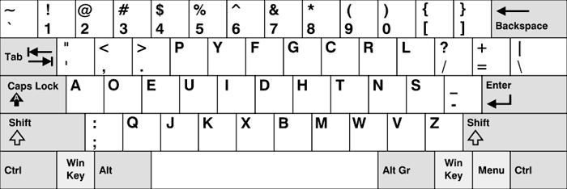

The Dvorak Simplified Keyboard is a keyboard layout patented in 1936 by Dr. August Dvorak, an educational psychologist and professor of education at the University of Washington in Seattle, as an alternative to the more common QWERTY layout.
If someone were to have Dvorak enabled on their computer, and a guest were to start typing while expecting the standard QWERTY layout, then the text would come out as nonsense. You are to write a program to de-scramble any such message.
The input file DATA3.txt will contain a single line of text, made up of any of the letters, numbers, and symbols found on a typical keyboard. There will be less than 256 characters in the line, and it will not end in a space.
The output file OUT3.txt will contain a single line of translated text.
D.nnr <rpne!
Hello World!
Note: the messages are case-sensitive, and the translation between lower and upper case is not always trivial.